Project Proposal: A Comparative Benchmark Python versus Rust on Numerical Solving of the Heat Equation
Subject
: Advanced programming techniques (Напредне технике програмирања)site
Project theme
: Predefined HPC
This project will explore Python and Rust in a high-performance computing (HPC) context, comparing their contrasting execution models to assess the impact on performance and scalability. The numerical solution of the heat equation will be used as a representative task to higlight these differences.
The aim of the project is to gain practical insights into both languages and deepen understanding of their strenghts and limitations when solving large-scale or computationally intensive problems.
Methodology
Both technologies will be presented with the same task: solving the 2D transient homogenous heat equation using the explicit finite difference scheme.
The solution will first be implemented in a serial form to establish the baseline for correctness and performance, and subsequently extended to parallel versions in both Python and Rust. Parallelization will target general-use multi-core CPUs exclusively (likely single socket, with consideration for NUMA-aware memory access), without relying on accelerators. It will use spatial domain decomposition of the 2D grid, employing either shared memory or message-passing parallelism, depending on what is appropriate for the implementation.
Scalability experiments will be conducted to evaluate strong (Amdahl) and weak (Gustafson) scaling, with results analyzed and documented as reports. Acheived speedup will be compared to the theoretical maximum, all results vusualized, and used to draw conclusions on the strengths and limitations of Python and Rust in this HPC context.
Implementation Considerations
Python implementation will rely on the multiprocessing library to deal with GIL, while in Rust, native threads will be used. The results will be stored in standard, portable data formats such as CSV, HDF5 or SILO, and visualized using Rust (likely using Plotters).
Future Work
-
To acheive more native Python vs. Rust comparison, Python implementation could be restricted from using any C extensions not bundeled with the interpreter. This would also preserve its portability, but would exclude some state-of-the-art libraries like NumPy.
-
Could try out the new experimental Python interpreter without GIL
-
...
References
-
Wikipedia contributors. (2025, December 21). Heat equation. In Wikipedia, The Free Encyclopedia. Retrieved 20:06, January 10, 2026, from https://en.wikipedia.org/w/index.php?title=Heat_equation&oldid=1328639783
-
Wikipedia contributors. (2025, October 19). Finite difference method. In Wikipedia, The Free Encyclopedia. Retrieved 20:09, January 10, 2026, from https://en.wikipedia.org/w/index.php?title=Finite_difference_method&oldid=1317617778
-
Li Xin. (2018, November 9). Scalability: strong and weak scaling. PDC Blog. https://www.kth.se/blogs/pdc/2018/11/scalability-strong-and-weak-scaling